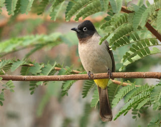
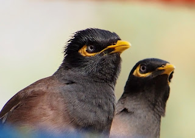
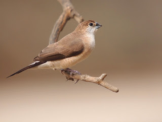

تعتبر الطيور من أكثر الكائنات الحية دهشة وقدرة على التكيف؛ فهي لا تملأ سماءنا بالألحان والألوان فحسب، بل تمثل ركيزة أساسية في السلسلة الغذائية والتوازن البيئي الذي يضمن استقرار كوكبنا.
اكتشف أسرار التاريخيضم عالمنا ما يقارب 10,000 نوع من الطيور، تتراوح في أحجامها من الطنان الصغير إلى النعامة الضخمة، وتلعب جميعها أدواراً حيوية مثل مكافحة الآفات الزراعية الطبيعية ونشر بذور النباتات في الغابات البعيدة.


